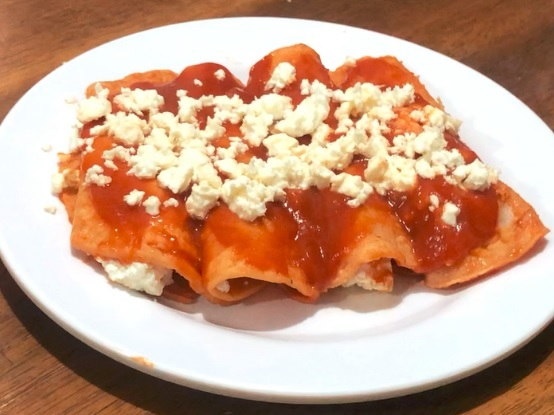

Bienvenido
Formando chefs
Todo lo que se debe saber
Mi Chefsito surge a partir de la necesidad de crear un espacio en el que se pueda difundir la cocina, recetas, videos, tips, noticias y muchas otras cosas para hacer conciencia de la importancia de una buena alimentación, sirve para las personas que apenas quieren aprender a cocinar y que no tienen mucha idea de cómo comenzar.
Por una mejor alimentación y un excelente platillo
Sea cual sea tu motivo, estás en el lugar correcto para aprender a cocinar. En MiCefsito recopilamos cuidadosamente recetas , proporcionándote un acceso fácil y rápido a una buena variedad de platillos.
Nuestro objetivo principal es facilitar la alimentación de los estudiantes foráneos así como de las personas que batallan para cocinar por la falta de ingredientes. Actualmente los foráneos tienen poca o nula experiencia para preparar alimentos, lo que les lleva a perjudicar su salud pidiendo comida por plataformas como UberEats o Rappi, la cual muchas veces no es tan saludable, a parte del costo elevado. No importa si eres un principiante en la cocina o un chef experimentado, MiCefsito está aquí para inspirarte y ayudarte a llevar tus habilidades culinarias al siguiente nivel.
Aprendamos a cocinar